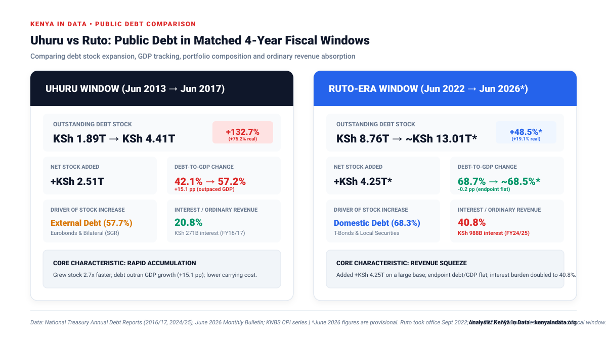
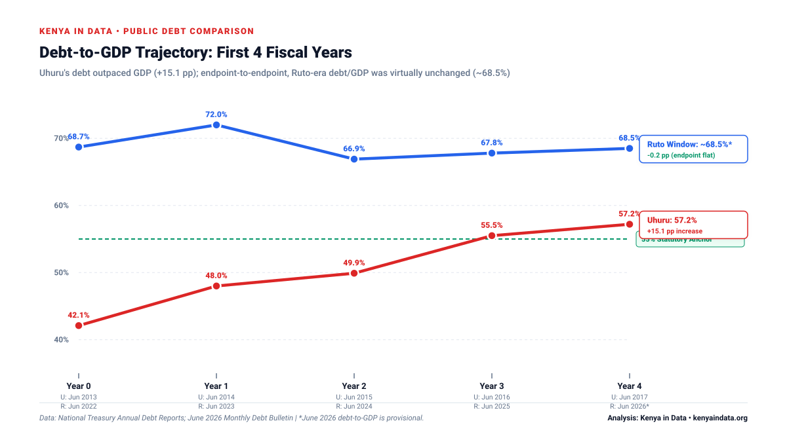
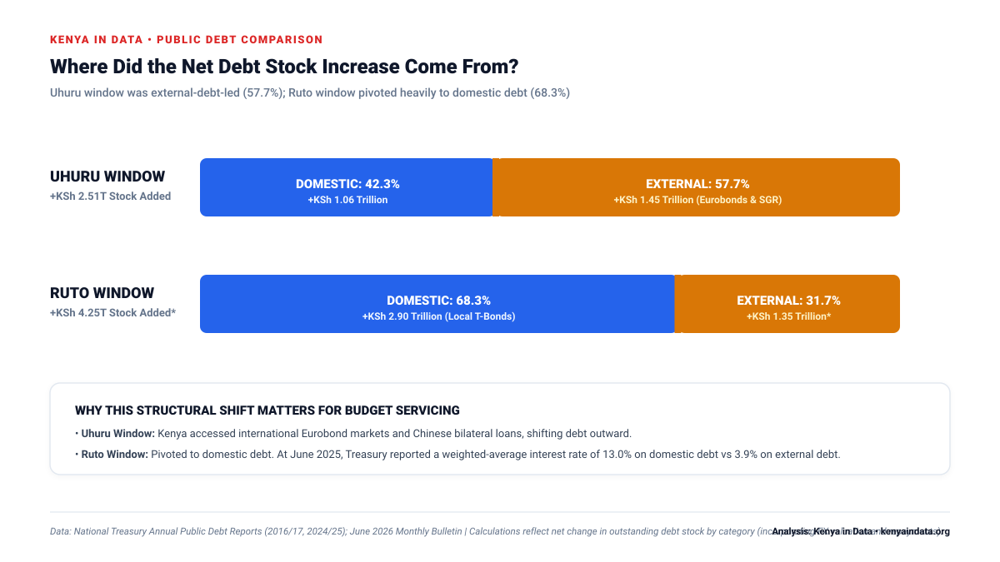
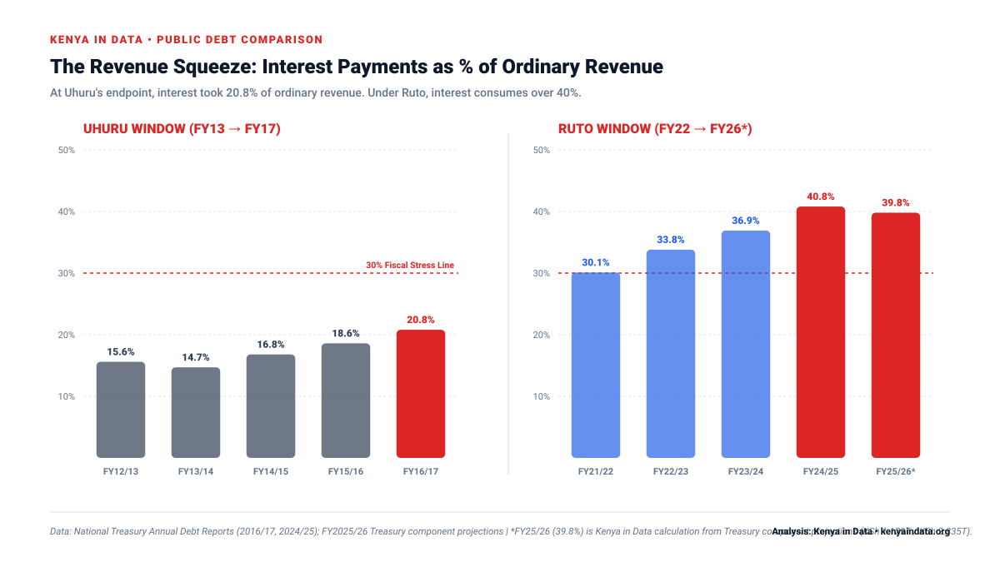

Head-to-Head Empirical Scorecard
Standardized four-year June-to-June fiscal accounting snapshots allow an exact, like-for-like comparison across both administrations.
| Metric | Uhuru Window (Jun 13 → Jun 17) | Ruto Window (Jun 22 → Jun 26*) | Analytical Takeaway |
|---|---|---|---|
| Comparison Window | Jun 2013 → Jun 2017 | Jun 2022 → Jun 2026* | Standardized 4-year June fiscal windows |
| Starting Public Debt | KSh 1.894T | KSh 8.761T | Ruto window began from a 4.6× larger base |
| Ending Public Debt | KSh 4.407T | ~KSh 13.013T* | Outstanding public & guaranteed debt stock |
| Increase in Debt Stock | +KSh 2.513T | +KSh 4.252T | Ruto window added +KSh 1.74T more nominal stock |
| Nominal Debt Growth | +132.7% | +48.5% | Uhuru grew the debt stock 2.7× faster |
| CPI-Adjusted Real Growth | +75.2% | +19.1% | Inflation-adjusted purchasing power expansion |
| Starting Debt / GDP | 42.1% | 68.7% | Base macroeconomic debt position |
| Ending Debt / GDP | 57.2% | ~68.5%* | Post-window debt ratio |
| Change in Debt / GDP | +15.1 pp | ~-0.2 pp* | Uhuru outpaced GDP; Ruto window endpoint flat |
| Domestic Debt Added | +KSh 1.062T (42.3%) | +KSh 2.903T (68.3%) | Ruto window pivoted heavily to local Treasury bonds |
| External Debt Added | +KSh 1.451T (57.7%) | +KSh 1.349T (31.7%) | Uhuru expansion led by Eurobonds & bilateral SGR |
| Interest / Ordinary Revenue | 20.8% (FY16/17) | 40.8% (FY24/25) | Carrying cost on national budget doubled |
| Like-for-Like Service Ratio | 23.6% | ~56.0% | Interest + External Principal / Ordinary Revenue |

{kind=link}
{kind=link}
1. Debt Stock: Uhuru Grew It Faster; Ruto Window Added More Shillings
Uhuru's comparison window started with a public debt stock of KSh 1.894 trillion. Four fiscal years later, that stock reached KSh 4.407 trillion. The increase was KSh 2.513 trillion, equivalent to +132.7% (a 2.33× expansion).
The Ruto-era comparison window began from a dramatically larger base: KSh 8.761 trillion in June 2022. The June 2026 Monthly Debt Bulletin puts the provisional end-June 2026 stock at approximately KSh 13.013 trillion. The four-year increase is KSh 4.252 trillion, or +48.5% (a 1.49× expansion).
The Base-Effect Distinction: The Ruto window added roughly +KSh 1.74 trillion more in nominal debt than Uhuru's first four years, but because the starting balance sheet was already 4.6× larger, the percentage growth was significantly lower (+48.5% vs +132.7%).
2. After Inflation, the Real Growth Gap Widens
To compare the economic scale of debt accumulation fairly, nominal debt stocks must be adjusted for purchasing power using date-matched KNBS Consumer Price Index (CPI) observations.
- Uhuru Window (2013–2017): CPI rose from 139.59 to 185.39 (2009=100 base). Real inflation-adjusted debt growth was +75.2%.
- Ruto Window (2022–2026): CPI rose from 124.22 to 154.91 (2019=100 base). Real inflation-adjusted debt growth was +19.1%.
In real purchasing power terms, the debt stock under Uhuru's first four fiscal years expanded at nearly four times the pace recorded in the Ruto window.

{kind=link}
3. Debt Relative to the Economy: Outpacing Output vs Holding the Line
In June 2013, Kenya's public debt was equivalent to 42.1% of GDP. By June 2017, the ratio reached 57.2%—an increase of +15.1 percentage points in four years. Debt grew far faster than economic output.
Under the Ruto window, Treasury reports public debt equal to 68.7% of GDP in June 2022. The provisional June 2026 bulletin places the ratio at approximately 68.5%. Endpoint-to-endpoint, debt/GDP was virtually flat across the window (68.7% → 72.0% → 66.9% → 67.8% → ~68.5%).

{kind=link}
{kind=link}
4. The Composition Shift: External Financing vs Domestic Paper
The structural composition of the net increase in the debt stock diverged sharply:
- Uhuru Window: External debt accounted for 57.7% of the net debt increase (+KSh 1.451T external vs +KSh 1.062T domestic), driven by commercial Eurobonds and bilateral SGR loans.
- Ruto Window: Domestic debt accounted for 68.3% of the net debt increase (+KSh 2.903T domestic vs +KSh 1.349T external), pivoting heavily to local Treasury bonds and bills.

{kind=link}
{kind=link}
This composition shift is consequential: Treasury reports a weighted-average interest rate of 13.0% on domestic debt versus 3.9% on external debt. Shifting borrowing to domestic markets heavily increases annual cash interest obligations.
5. The Repayment Squeeze: Ruto's Defining Fiscal Challenge
While the debt stock grew more slowly relative to GDP across the Ruto window, debt servicing costs reached historic highs.
| Debt-Servicing Measure | Uhuru FY2016/17 | Ruto FY2024/25 Actual | Ruto FY2025/26 Projection* |
|---|---|---|---|
| Total Interest Paid | KSh 271.2B | KSh 987.5B | KSh 1.129T |
| Ordinary Revenue Collected | KSh 1.306T | KSh 2.420T | KSh 2.835T |
| Interest / Ordinary Revenue | 20.8% | 40.8% | ~39.8% |
| Like-for-Like Debt Service (Interest + Ext. Principal) | 23.6% | ~56.0% | ~56.7% |
| Modern Headline Service Ratio (incl. Domestic Redemptions) | Not directly comparable | 71.2% | 73.0% projected |

{kind=link}
{kind=link}
6. Conclusion: Two Administrations, Two Different Debt Problems
The debt stock expanded rapidly (+132.7% nominal, +75.2% real), heavily driven by external borrowing (Eurobonds and SGR loans), outpacing economic growth by +15.1 percentage points of GDP.
The debt stock grew more slowly relative to GDP (endpoint-to-endpoint flat at ~68.5%), but sits atop a massive inherited balance sheet where high domestic interest rates consume over 40% of ordinary revenue.
Methodology & Data Accounting
This analysis uses matched June-to-June fiscal-year debt-stock windows rather than presidential swearing-in anniversaries:
- Fiscal Timing: Uhuru assumed office in April 2013; Ruto in September 2022. June 2013 → June 2017 and June 2022 → June 2026 provide standardized four-year fiscal accounting snapshots.
- Real Growth Deflator: Computed using KNBS monthly CPI series: 35585 ext{Real Growth} = \left( rac{ ext{Debt}_{ ext{end}}}{ ext{Debt}_{ ext{start}}} ight) imes \left( rac{ ext{CPI}_{ ext{start}}}{ ext{CPI}_{ ext{end}}} ight) - 135585 Uhuru uses the 2009=100 series (139.59 → 185.39). Ruto uses the 2019=100 series (124.22 → 154.91).
- Debt Scope: Measures net outstanding public and publicly guaranteed debt stock (including new disbursements, amortizations, repayments and FX revaluations).
Download Open Data & Assets
Kenya in Data releases all underlying observation tables and chart files under an open CC BY 4.0 license for public use, journalism, and research.
{kind=link}
Primary Sources & References
National Treasury of Kenya (2017). Annual Public Debt Management Report 2016/2017. Tables 1-2, 1-3, pp. 12–18.
National Treasury of Kenya (2025). Annual Public Debt Report 2024/2025. Tables 4.0-1, 4.1-1 and 11.1-1, pp. 28–45.
National Treasury of Kenya (2026). June 2026 Monthly Debt Bulletin. Public Debt Management Office.
Kenya National Bureau of Statistics (2013–2017, 2022–2026). Consumer Price Indices and Inflation Rates, June observations.